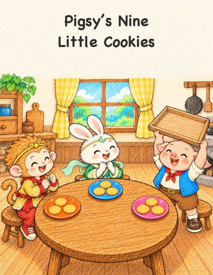

Wukong
Wukong 
Pigsy’s Nine Little Cookies
Pigsy bakes nine little cookies to share with Wukong and Rabbit. Wukong deals them out four, three, two. Not fair! So they share in turns, one for each plate, round and round. After three rounds everyone has three, and three plates are enough.
English bedtime picture book · About age 5 · Free to read and print
Read a little adventure.
Turn the page with the buttons, arrow keys, or a swipe.

This page could not load. Please try again, or download the PDF.
Download PDFPigsy’s Nine Little Cookies
© 2026 Peihong GuoLicensed under CC BY-NC-ND 4.0
Page 1 of 18
Keep a copy for later: Download PDF
How do I print a little book?
Download the booklet edition. Print on US Letter, landscape, double-sided with short-edge flipping, at actual size / 100%, one PDF page per sheet, in normal page order. Each PDF page already contains two book pages.
The print booklet has 20 pages, including covers and an author page. The inside back cover is intentionally left quiet.
This book uses 5 sheets, with 0 blank book pages added at the end. Nest the sheets, fold through the center and staple along the fold.
Current reading and print files
The current English and Chinese editions are available below. Reading and booklet PDFs carry a subtle attribution watermark.
- v2 — Reading PDF · Booklet PDF
Edition history
Help the next story grow.
Stories are free to read and print. If you and your child enjoy them, you are welcome to support more stories.